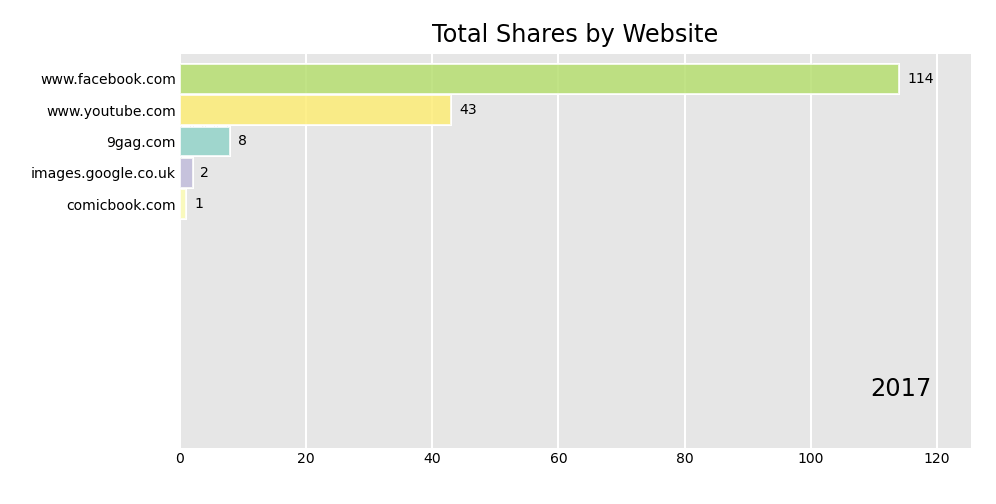

SAYN Project Example: Facebook Data Project¶
Project Description¶
Overview¶
This is an example SAYN project which shows how to use SAYN for data modelling and processing. You can find the GitHub repository here.
This project does the following:
- Extracts Facebook Messenger data
- Loads it into a SQLite database
- Cleans the extracted data
- Calculates reply times for chat data
- Performs some basic text and sentiment analysis on the transformed data
- Generates wordcloud timelapse GIFs for each conversation
- Generates a bar chart race GIF for most shared sites in chat data

Features Used¶
- Python tasks to extract and analyse data
- Autosql tasks to automate SQL transformations.
- Usage of parameters to make the code dynamic.
- Usage of presets to define tasks.
In addition to SAYN, this project uses the following packages:
- Data processing:
numpy,pandas,nltk,vaderSentiment - Visualisations:
matplotlib,wordcloud,pillow,bar_chart_race
By default, the project uses SQLite as a database. You can use DB Browser for SQLite to navigate the data easily. You can also connect this database to your preferred visualisation tool.
Running The Project¶
To run the project, you will need to:
- clone the repository with
git clone https://github.com/173TECH/facebook_data_project.git. - rename the
sample_settings.yamlfile tosettings.yaml. - install the project dependencies by running the
pip install -r requirements.txtcommand from the root of the project folder. - install
ImageMagick, details here: https://imagemagick.org/ - use
sayn runfrom the root of the project folder to run all SAYN commands.
Attention
This project comes with a sample dataset, you should use this dataset to test run the project.
After a successful run you should see 3 new files in python/img, these should be the following:
- sample_Goku_timelapse.gif
- sample_Vegeta_timelapse.gif
- chart_race.gif
Adding Your Facebook Messenger Data¶
For this you will need your Facebook Messenger data in JSON format, you can get request it by doing the following:
- Sign in to Facebook
- Go to Settings & Privacy > Settings > Your Facebook Information > Download Your Information
- Change format to JSON and click Create File (this can take a while depending on your date range and media quality)
Once you have the data, you can find the chat data in messages/inbox (you should see a collection of folders corresponding to each of your chats):
- Copy and paste the chat folders you are interested into the
datafolder in this project. - In
tasks/data_science.yaml, change thefacebook_nameparameter to your full name on Facebook
Note: If you use a large amount of chat data you will experience longer load times for certain tasks
Note
If you use a large amount of chat data you will experience longer load times for certain tasks